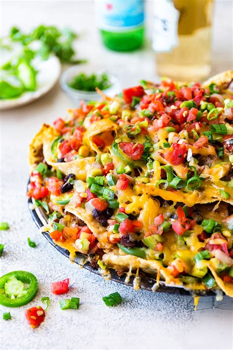

Loaded Nachos

Photo Source
Description
There is nothing about even the mere mention of this dish that doesn't spark instant joy. Cheesy, beefy, beany goodness with a rainbow of toppings decorating the meal like it's Christmas is an image that sounds too good to be true. Thank goodness it's true!
Ingredients
For the Base
- Onion. You may want to use the whole onion. Should be diced.
- Ground beef.
- A can of beans. Pinto, ranch style, or chili works for this dish. Should be washed and ready to cook.
- Shredded cheese. The more cheese, the merrier! Cheese type is up to you but I suggest Cheddar and Monterey Jack for their classic good flavor.
- Tortilla chips.
- Salt, pepper, chili powder, paprika, cumin, crushed red pepper. While salt and pepper are not optional, the rest is up to you and your desired flavor.
- Cooking oil. At your reference, though I suggest olive oil.
For the Toppings
- 2 - 4 whole Roma tomatoes. Amount is up to you. Should be diced.
- Fistful of cilantro Should be chopped.
- A whole jalapeno.
- Juice of one lime.
- A whole avocado. Should be diced.
Steps
The following assumes you have diced the onions, tomato, and cilantro, and washed your beans.
- Reserve half of the diced onion for cooking with the beef and the other half for adding to the toppings. Throw half of the diced onion and 2 tablespoons of cooking oil into a skillet over medium heat.
- Once the onion is softening, add the ground beef.
- Once the beef has fully browned, add the salt, pepper, cumin paprika, chili powder, and crushed red pepper. Add the beans and a little bit of water. Let the beef simmer on low heat.
- While the beef simmers, prepare the topping. Combine and stir together the rest of the onion, tomato, cilantro, jalapeno, and lime juice, with a dash of salt. You can add the avocade early here.
- Retrieve a large dish that you will bake the nachos in. It should be microwave-safe, but if not, you can use the oven. Once the beef and beans is done, prepare "layers" of each component into the dish. A layer of chips, then a layer of beef and beans, then a layer of shredded cheese. Repeat this sequence until you've ran out.
- Either microwave or oven-bake the dish until the cheese has been fully melted.
- Add the topping mixture and avocados. Serve and enjoy.
Home